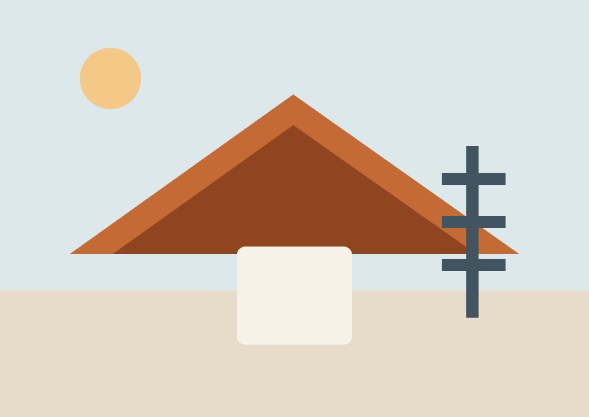

Preparation that shows in the finish
Repairs, filling, sanding, protection, and coating sequence are handled as part of the workmanship, not as optional extras.
Auckland painting and decorating
Leco Painters works across homes, commercial interiors, exteriors, and roofs with a preparation-first approach, disciplined project handling, and finishes designed to look sharp on day one and stay that way.
Featured work
Preparation-heavy repainting for exposed timber surfaces, cleaner detailing, and a stronger street-facing finish.
Trusted by private homeowners, property managers, and commercial clients who need a painter that handles the process as carefully as the finish.
Why clients call Leco
Leco suits clients who want the job handled properly: clear scope, strong preparation, careful site standards, and a finished result that looks intentional rather than rushed.
Repairs, filling, sanding, protection, and coating sequence are handled as part of the workmanship, not as optional extras.
Clients get practical guidance on scope, timing, and what the job actually requires before work starts.
Suitable for occupied homes, managed buildings, and active commercial spaces where communication and tidiness matter.
The best first impression is usually not colour selection. It is how clearly the job is scoped, how confidently the preparation is explained, and how much trust the client has in the process from the outset.

Approach
The homepage now carries more visual proof instead of relying only on service summaries.
Core services
Detailed interior repainting for homes, offices, and shared spaces where clean lines and tidy staging matter.
Exterior systems designed around weather exposure, substrate condition, and durable surface protection.
Roof restoration and coating work that improves both property presentation and maintenance performance.
Commercial repainting for retail, office, and managed sites with smarter scheduling and clearer coordination.
Who Leco serves
What clients are buying
Clients usually remember the organisation of the job as much as the finish itself. That means better planning, better communication, and fewer weak points hidden inside the scope.
How it works
Selected projects
Preparation-led weatherboard repainting to improve durability, sharpen detailing, and lift the whole front elevation.
Interior repainting scheduled around business activity for a cleaner client-facing environment and more current fit-out feel.
Roof preparation and coating renewal to improve visual consistency, protect exposed surfaces, and support ongoing maintenance.
Built on repeat work
We wanted painters who would handle the property carefully and communicate properly, not just get colour on the walls. The preparation was thorough, the timing stayed clear, and the finished result lifted the whole place.
Request a quote
Share the property type, location, and what needs attention. Leco can recommend the right scope and next step.